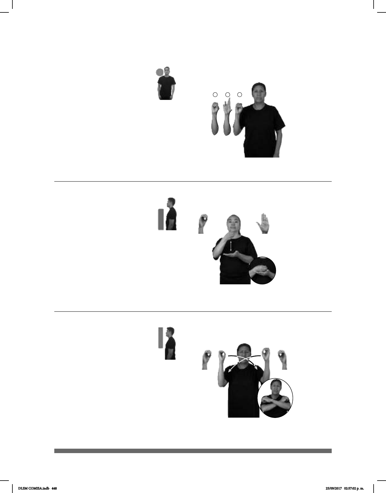

448
1
2
3
Oro (A) (O-61)
Seña: SM
Seña que pasa de O.1 a
Palma hacia el frente.
A la altura del hombro.
sust. m. Metal precioso de
color amarillo brillante al que
pueden dársele distintas formas. Es
muy pesado, inalterable e inoxidable y
se encuentra en la naturaleza no
combinado con otros metales.
_____________¡ !__
#ORO METAL CARO
¡El oro es un metal carísimo!
Seña: SB
MD O.1, MB B-P. 2
MD palma hacia la
izquierda. MB palma hacia arriba.
A la altura del pecho. MD
sobre MB.
Movimiento: La MD golpea a la MB
en línea recta repetidamente.
sust. m. Metal precioso
de color amarillo brillante al que
pueden dársele distintas formas.
Oro (B) (O-62)
MARATÓN pos-MI PRIMO MEDALLA ORO YA GANAR
Mi primo ganó medalla de oro en el maratón.
Seña: SS
O.1
Palmas hacia el centro.
A la altura de la cara.
Movimiento: Las manos cruzan
hacia el centro y llegan a un punto
cercano.
Ceño fruncido,
ojos apretados, labios protuidos.
1. adj. Que carece de luz
o que recibe muy poca luz. 2. sust. f.
Ausencia o falta de luz.
Oscuro, -a
1
/ Oscuridad
2
(O-63)
__muy_
NOCHE OSCURA
La noche está muy oscura.
DLSM COMISA.indb 448 25/09/2017 02:57:02 p. m.